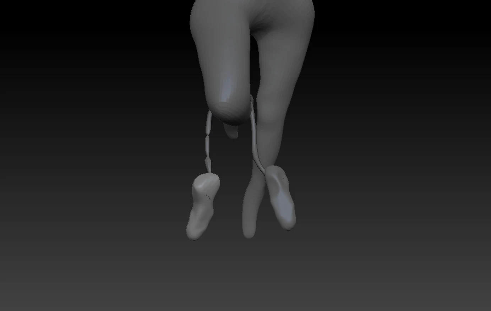
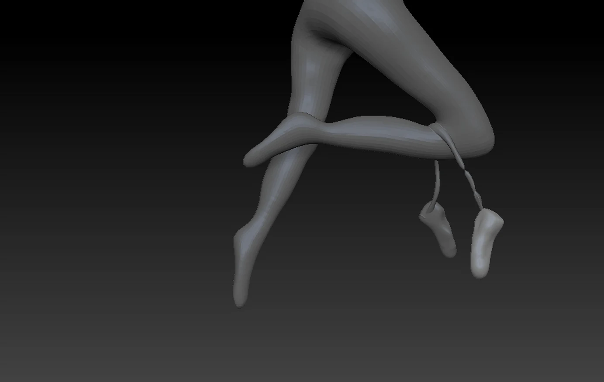

← volver a proyectos
proyecto — diseño multimedial
Diseño y modelado de piernas de ballet
Escultura digital de unas piernas en pose de danza, con zapatillas de punta colgando de sus cintas.
Escultura digital de unas piernas en pose de danza, con zapatillas de punta colgando de sus cintas.

Diseño y modelado de unas piernas de ballet en pleno movimiento, trabajadas como ejercicio de escultura digital y anatomía. Me enfoqué en la pose —una pierna flexionada que cruza frente a la otra, extendida en punta— para transmitir la ligereza y el equilibrio de la danza, cuidando las proporciones, la silueta de los músculos y la continuidad de las formas. Sumé unas zapatillas de punta que cuelgan de sus cintas, un detalle que cuenta la historia del movimiento y le da carácter a la escena. El resultado se presenta en arcilla gris, para poner el foco en el volumen y en la forma.

